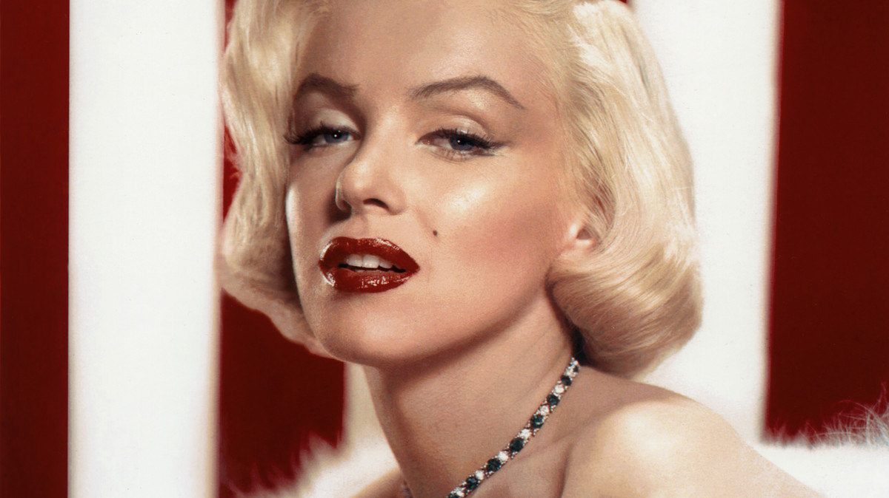

7 unique facts about Marilyn

1. Pernah tiga kali menikah dan pertama kali menikah saat usia 16 tahun.
- Tidak ada yang percaya jika Gladys Baker adalah ibunya.
- Gaun Monroe memecahkan rekor sebagai gaun dengan harga sangat fantastis.
- Monroe sangat tidak menyukai berhadapan dengan kamera.
- Kecantikannya di depan kamera merupakan kecantikan yang natural.
- Kematiannya masih menjadi kontroversi.
- Bisa dimakamkan bersebelahan dengan Marilyn Monroe adalah hal yang berharga